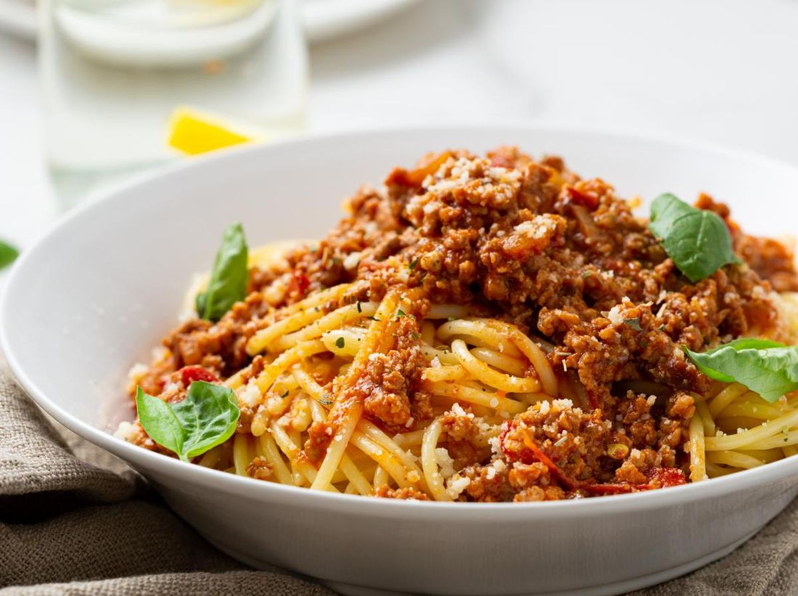
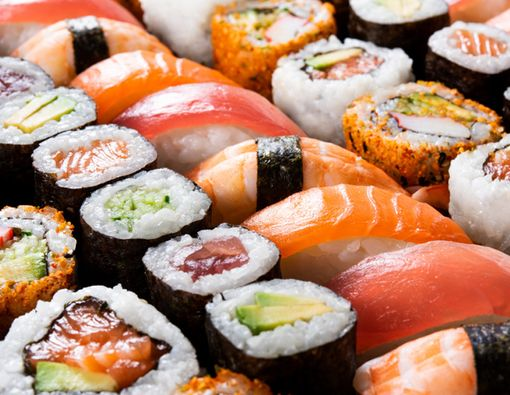
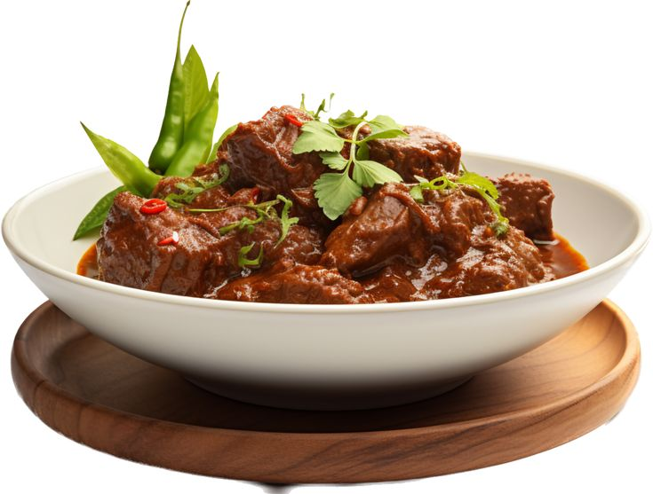

Nasi Goreng
Resep nasi goreng yang mudah dan lezat.
Lihat Resep

Spaghetti Bolognese
Spaghetti dengan saus bolognese yang kaya rasa.
Lihat Resep

Sushi
Sushi segar dengan berbagai isian lezat.
Lihat Resep

Sate Ayam
Sate ayam dengan bumbu kacang yang khas.
Lihat Resep

Rendang
Rendang daging yang gurih dan pedas.
Lihat Resep

Gado-Gado
Gado-gado dengan bumbu kacang yang lezat.
Lihat Resep